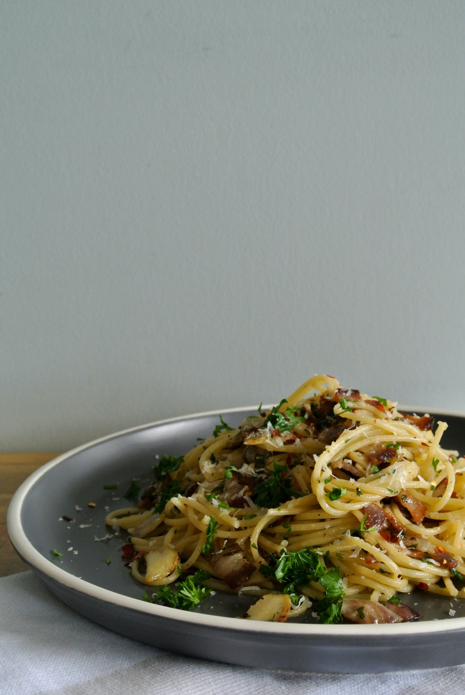

Home

Creamy Pasta
It's your creamy pasta dream come true...loaded with golden buttery garlicky
mushrooms! SCALING UP (slide scaler): Cook mushroom in batches, otherwise
they'll steam instead of going golden.
Ingredients:
- 160g/ 6oz fettuccine or linguine
- 2 tbsp (30g) unsalted butter
- 1/2 tbsp olive oil
- 300g/ 10 oz mushrooms , sliced 1/3 cm / 1/8" thick (white, cremini/swiss brown)
- 2 garlic cloves , finely chopped
- 1/2 cup (125 ml) white wine , dry (or rose, sub more broth)
- 1/2 cup (125ml) chicken broth/stock , low sodium (or veg)
- 3/4 cup (185ml) cream , heavy / thickened
- 1/3 cup (30g) parmesan , finely grated
- 1/2 tsp salt and pepper , each
Instructions:
- Cook pasta in salted water for 1 minute less than time per packet (start this mid mushroom cook). Just before draining, scoop out 1 cup cooking water, then drain.
- butter and heat oil in a large skillet over high heat.
- Add mushrooms and cook, stirring regularly. When they start to sweat, add a pinch of salt and pepper.
- When pretty golden (about 4 - 5 minutes), add garlic and cook until garlic is golden and mushroom is golden.
- Stand back and add wine (it will be steamy!!), stir, scraping the bottom of the skillet. Simmer rapidly until wine is mostly evaporated and winey smell is gone.
- Add broth, cream, parmesan, salt and pepper. Stir to dissolve parmesan and simmer for 2 minutes, stirring regularly.
- Transfer pasta into sauce, toss for 1 - 2 minutes until sauce thickens and coats pasta. If sauce gets too thick (rather than slick, see video), add a splash of reserved pasta cooking water.
- Garnish with parsley and serve immediately with extra parmesan!